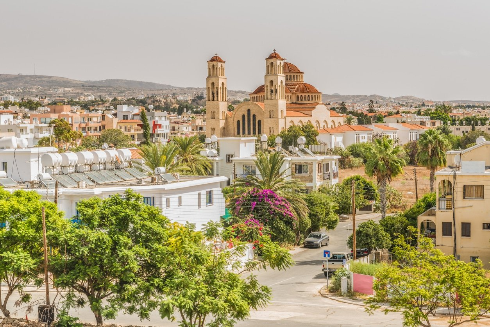
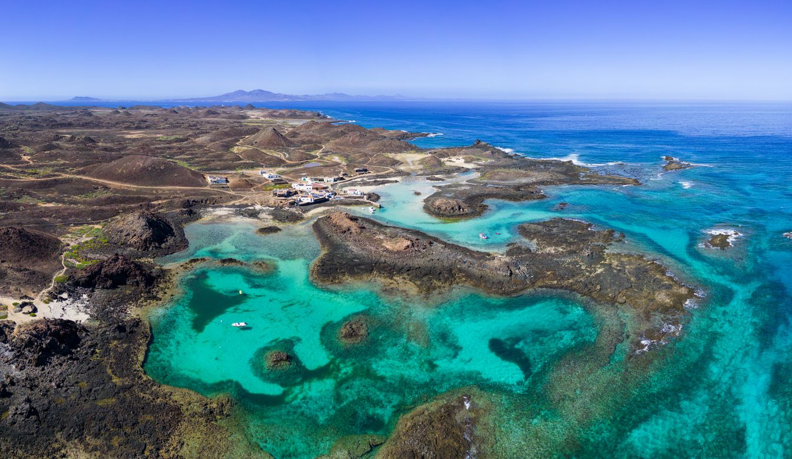
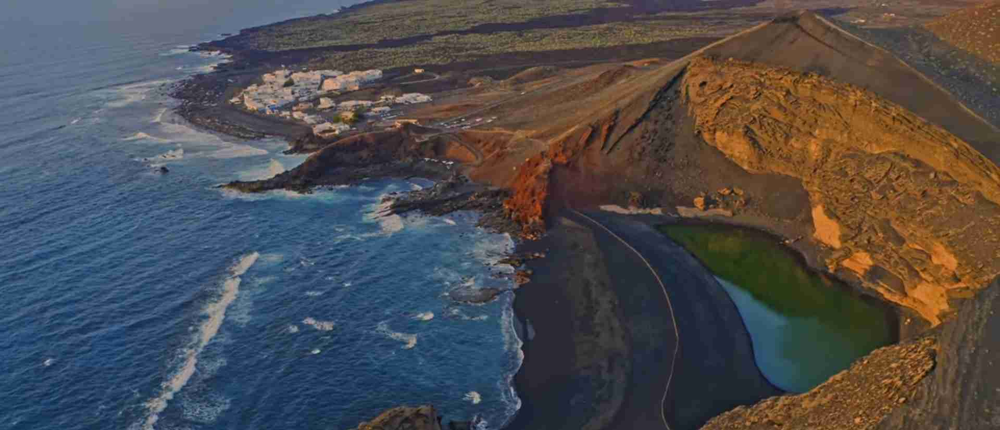
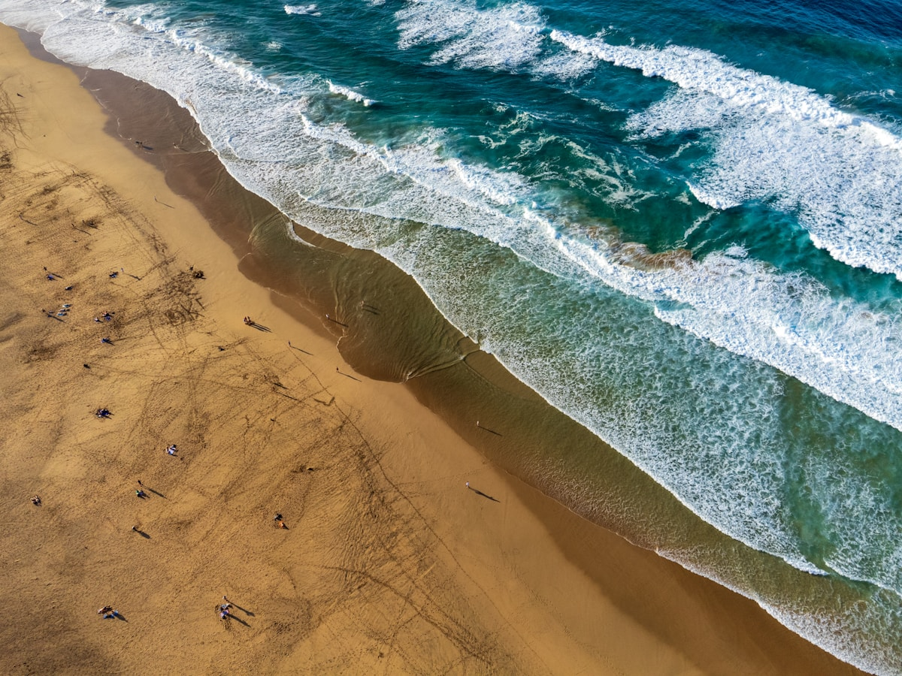
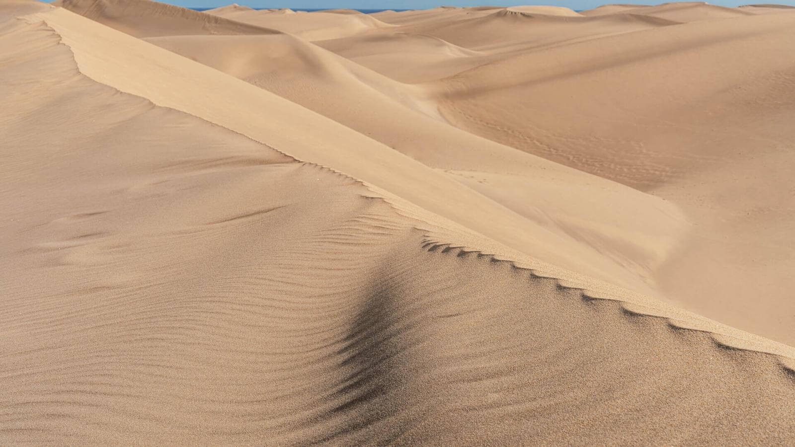
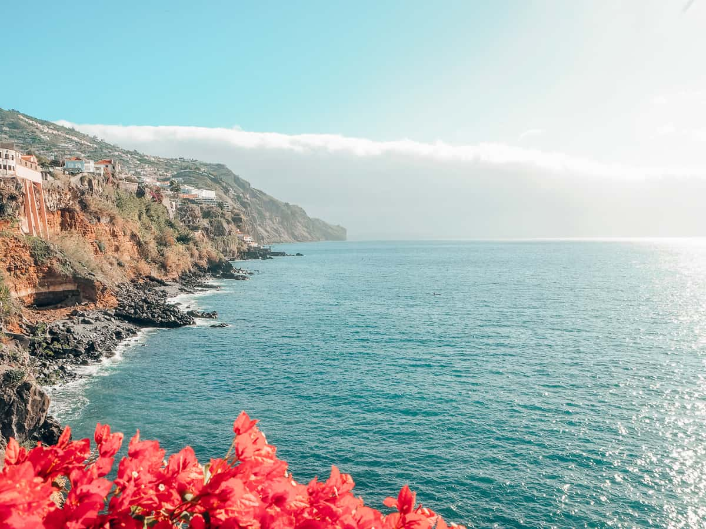
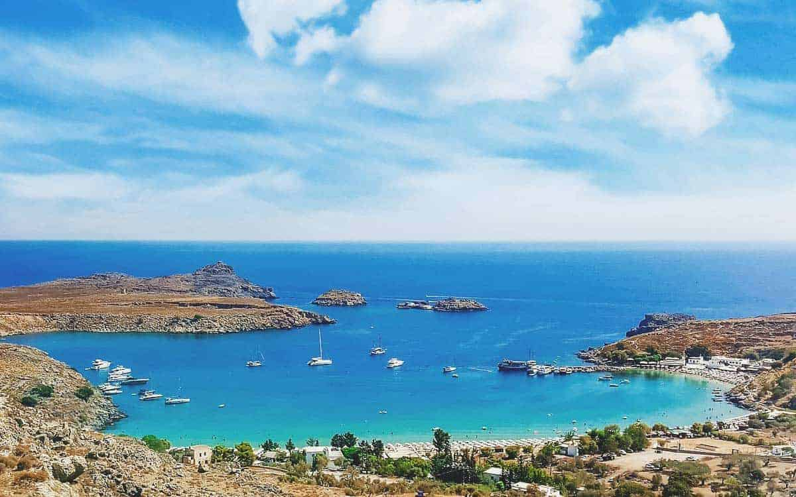
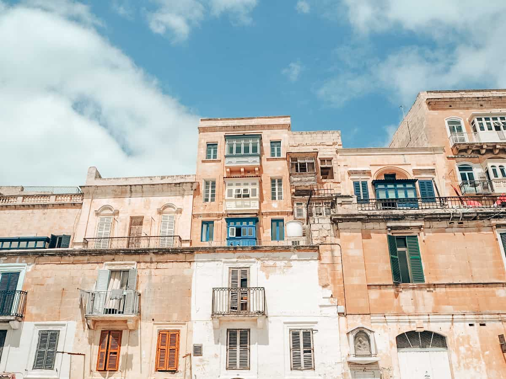

CYP · 27°C
№ 1 — Paphos / Larnaca
Where the air still holds twenty degrees and the sea is willing — a six-destination shortlist for travellers escaping the Low Countries autumn.



Highs slip from 27° to 25° through October, just 11 mm rain over four days, nine sunshine hours, 22°C sea[6].

25°C daytime, 22.5°C sea — slightly warmer than Lanzarote at the surface and visibly emptier[7].


All dip below 25°C and into rising rainfall by month-end. Each can still deliver a warm week if you front-load your dates. Each earns space for a different reason — price, flight time, or a bucket-list sight.

25–27°C early month, falling to a 24°C monthly average; 68 mm rain over 5 days; sea 23°C[15][16].
Why come: the UNESCO Medieval Old Town — oldest inhabited medieval city in Europe[68]; the Symi catamaran day-trip runs daily through 31 Oct[69].
Caveat: Faliraki resort hotels wind down mid-month; Rhodes Town stays open year-round[110].
Heraklion 24°C high, 95 mm rain, sea 23°C; Chania transitional with cold breezes[13][14].
Why come: Chania's Venetian harbour, Samaria Gorge full-day hike (open through October)[65]; Heraklion for Knossos and a less touristy pace[66].
Caveat: "October will almost always have some rain, sometimes heavy"[109].
Highs drop from 25°C early to 22°C late, ~70 mm rain over 8 days, sea cool at 19°C[20][25].
Why come: Ponta da Piedade cliffs, Praia da Marinha, Benagil cave, Cape St Vincent[72]. Lodging up to 30% cheaper in shoulder season[115].
⚠ Off-season: CRL→FAO drops to 1 weekly Ryanair flight by March 2026[37]. Warm enough for sightseeing, marginal for swimming.
Daily high ~25°C; Palermo 24.3°C, 80 mm rain over 8 days; sea 22.4°C[19][70].
Why come: Etna grape-harvest tours, Valley of the Temples, Palermo street food, Trapani salt pans, Ortigia, Taormina[71].
⚠ Wet: Catania is Sicily's wettest month at 105–113 mm; sirocco gusts to 100 km/h with "blood rain"[18][112].

Highs decline from 26°C early to 22°C by month-end; ~90 mm rain over 9 days; "October marks the beginning of the wetter season"[10][9].
Why come: Caravaggio in St John's Co-Cathedral, Mdina the Silent City, Marsaxlokk Sunday market, prehistoric Ħaġar Qim/Mnajdra temples (older than the pyramids), Gozo by ferry[60][62].
⚠: gregale wind hits 90 km/h in storms[113]. High cultural payoff if the forecast holds.
105–113 mm rain over 7 days — Sicily's wettest month, with autumn sirocco storms regularly grounding ferries[18].
If you want Sicily, base in Palermo or Trapani in the west.
| Destination | BRU direct | CRL direct | Time | RT € |
|---|---|---|---|---|
| Cyprus (LCA / PFO) | Aegean LCA 5/wk · TUI fly PFO 2/wk | Ryanair → PFO | ~4h00 | ~700 pp |
| Tenerife (TFS) | Brussels Airlines · Transavia · TUI Fly · 11/wk | Ryanair · 10/wk | ~5h00 | from ~140 |
| Lanzarote (ACE) | Brussels Airlines | Ryanair | ~4h45 | from ~140 |
| Fuerteventura (FUE) | Brussels Airlines | Ryanair | ~5h00 | from ~140 |
| Gran Canaria (LPA) | Brussels Airlines | Ryanair | ~5h00 | from ~150 |
| Madeira (FNC) | Brussels Airlines · TUI Fly · 3/wk | Ryanair | ~4h30 | from ~76 |
Frequencies and fare floors compiled from Flightconnections[38], Brussels South Charleroi[28], Skyscanner[82], and Expedia[78].